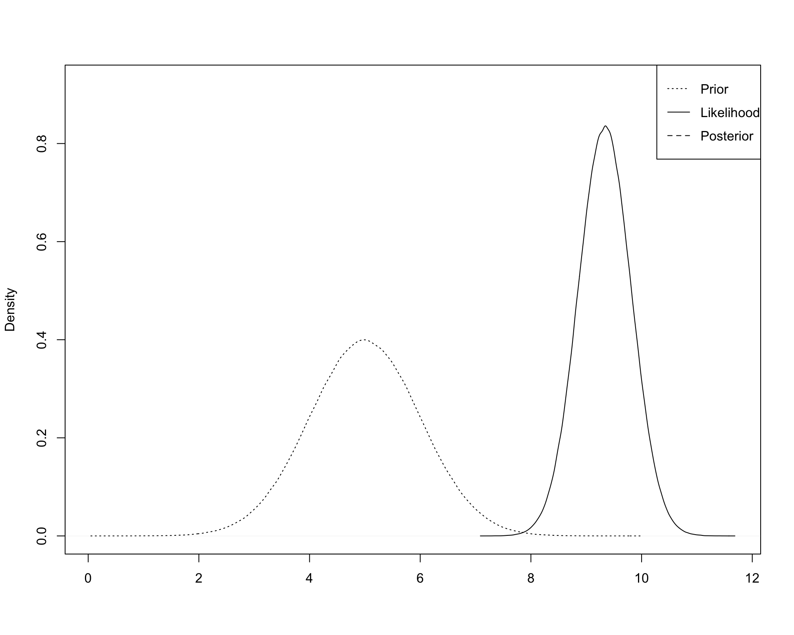

Prior Distribution
Bayes' Theorem can be used to model the distribution of parameters.
- Recall that the likelihood of data \({\bf y}\) can be expressed as \(f({\bf y}|{\bf \theta})\).
- \({\bf \theta}\) is a vector of parameters.
- In reality, we think of \({\bf \theta}\) as a set of unknown values that are not random.
- However, we treat \({\bf \theta}\) as random because of our lack of knowledge.
- That is, our lack of knowledge induces a distribution over \({\bf \theta}\).
Prior Distribution and Likelihood
The prior distribution \(\pi({\bf \theta})\) expresses our beliefs about \({\bf \theta}\) prior to observing data \({\bf y}\).
- \(\pi({\bf \theta})\) is different from the likelihood: \(f({\bf y}|{\bf \theta})\).
- \(\pi({\bf \theta})\) is loosely interpreted as the probability of \({\bf \theta}\) occurring before we observe data.
- \(f({\bf y}|{\bf \theta})\) is loosely interpreted as the probability of the data occurring, given a specific value of the parameter vector \({\bf \theta}\).
Joint Density
The joint density of \({\bf y}\) and \({\bf \theta}\) is
\[\begin{split}f({\bf y},{\bf \theta}) & = f({\bf y}|{\bf \theta})
\pi({\bf \theta}).\end{split}\]
- This is analogous to the relationship we previously derived:
\[\begin{split}P(A \cap B) & = P(A|B)P(B).\end{split}\]
Marginal Density
The marginal density of \({\bf y}\) is
\[\begin{split}f({\bf y}) & = \int f({\bf y},{\bf \theta}) d{\bf \theta}
= \int f({\bf y}|{\bf \theta}) \pi({\bf \theta})
d{\bf \theta}.\end{split}\]
Marginal Density
- This is analogous to the relationship we previously derived:
\[P(A) = P\left((A \cap B_1) \cup \cdots \cup (A \cap
B_K)\right) \hspace{0.38in}\]
\[= P(A \cap B_1) + \cdots + P(A \cap B_K)\]
\[\hspace{0.53in} = P(A|B_1) P(B_1) + \cdots + P(A|B_K) P(B_K)\]
\[= \sum_{i=1}^K P(A|B_i) P(B_i), \hspace{0.8in}\]
for a partition \(\{B_i\}_{i=1}^K\).
Posterior Distribution
According to Bayes' Theorem,
\[\begin{split}\pi({\bf \theta}|{\bf y}) & =
\frac{f({\bf y}|{\bf \theta})
\pi({\bf \theta})}{f({\bf y})} \hspace{0.92in}\end{split}\]
\[= \frac{f({\bf y}|{\bf \theta})
\pi({\bf \theta})}{\int f({\bf y}|{\bf \theta})
\pi({\bf \theta}) d{\bf \theta}}.\]
- \(\pi({\bf \theta}|{\bf y})\) is referred to as the posterior distribution of \({\bf \theta}\).
- \(\pi({\bf \theta}|{\bf y})\) is loosely interpreted as the probability of \({\bf \theta}\) after observing \({\bf y}\).
Bayesian Updating
Bayesian analysis is a method to use data to update our beliefs about \({\bf \theta}\).
- We begin with a prior distribution \(\pi({\bf \theta})\) which captures our views about the likelihood of \({\bf \theta}\) taking particular values.
- We specify a model for the probability density of the data, given \({\bf \theta}\): \(f({\bf y}|{\bf \theta})\).
- We use the likelihood to update our beliefs about \({\bf \theta}\):
\[\begin{split}\pi({\bf \theta}|{\bf y}) & =
\frac{f({\bf y}|{\bf \theta}) \pi({\bf \theta})}{\int
f({\bf y}|{\bf \theta}) \pi({\bf \theta})
d{\bf \theta}}.\end{split}\]
- If the data are very informative, \(\pi({\bf \theta}|{\bf y})\) can be quite different from \(\pi({\bf \theta})\).
A Note on Proportionality
Suppose
\[w = ax\]
\[y = bx\]
\[z = wy\]
then
\[w \propto x\]
\[y \propto x\]
\[z \propto x^2.\]
A Note on Proportionality
More generally, if
\[w = g_w(x) h_w(u)\]
\[y = g_y(x) h_y(u)\]
\[z = wy\]
then
\[w \propto g_w(x)\]
\[y \propto g_y(x)\]
\[z \propto g_w(x) g_y(x).\]
A Note on Proportionality
Since \(f({\bf y})\) is not a function of \({\bf \theta}\),
\[\begin{split}\pi({\bf \theta}|{\bf y}) & =
\frac{f({\bf y}|{\bf \theta})\pi({\bf \theta})}{f({\bf y})}
\propto f({\bf y}|{\bf \theta})\pi({\bf \theta}).\end{split}\]
- It is often easier to work with only \(f({\bf y}|{\bf \theta})\pi({\bf \theta})\).
Conjugate Priors
Our choice of \(\pi({\bf \theta})\) and \(f({\bf y}|{\bf \theta})\) may not yield an analytic solution for \(\pi({\bf \theta}|{\bf y})\).
- \(\pi({\bf \theta}|{\bf y})\) still exists, but it must be computed numerically.
- However, when the likelihood and prior have similar forms, they result in tractable posteriors.
- A conjugate prior is a distribution that results in a posterior of the same family when coupled with a particular likelihood.
Conjugate Priors
- For example, if \(f({\bf y}|{\bf \theta})\) is a binomial distribution and \(\pi({\bf \theta})\) is a beta distribution, \(\pi({\bf \theta}|{\bf y})\) will also be a beta distribution.
- Alternatively, if \(f({\bf y}|{\bf \theta})\) is a normal distribution and \(\pi({\bf \theta})\) is a normal distribution, \(\pi({\bf \theta}|{\bf y})\) will also be a normal distribution.
Normal Example
Suppose \(Y_1, \ldots, Y_n \stackrel{i.i.d.}{\sim} \mathcal{N}(\mu,\sigma^2)\), where \(\sigma^2\) is known and \(\mu\) is unknown.
- Assume \(\pi(\mu)\) is \(\mathcal{N}(\mu_0, \sigma^2_0)\), where \(\mu_0\) and \(\sigma^2_0\) are known parameters.
- We will see below that \(\sigma^2_0\) provides a measure of how strong our beliefs are that \(\mu = \mu_0\) prior to observing data.
Normal Example
The prior is
\[\begin{split}\pi(\mu) & = \frac{1}{\sqrt{2\pi} \sigma_0} \exp
\left\{-\frac{1}{2\sigma^2_0} (\mu - \mu_0)^2 \right\} \hspace{0.5in}\end{split}\]
\[\begin{split}\hspace{0.4in} & = \frac{1}{\sqrt{2\pi} \sigma_0} \exp
\left\{-\frac{1}{2\sigma^2_0} (\mu^2 - 2\mu\mu_0 + \mu^2_0)
\right\}\end{split}\]
\[\begin{split}& \propto \exp \left\{\frac{\mu \mu_0}{\sigma^2_0} -
\frac{\mu^2}{2\sigma^2_0} \right\}. \hspace{1in}\end{split}\]
Normal Example
The likelihood is
\[\begin{split}f(Y_1,\ldots, Y_n|\mu) & = \prod_{i=1}^n \left[
\frac{1}{\sqrt{2\pi} \sigma} \exp\left\{-\frac{1}{2\sigma^2}
(Y_i - \mu)^2\right\}\right] \hspace{0.25in}\end{split}\]
\[\begin{split}& = \left(\frac{1}{2\pi \sigma^2}\right)^{n/2}
\exp \left\{-\frac{1}{2\sigma^2} \sum_{i=1}^n (Y_i -
\mu)^2\right\} \hspace{0.13in}\end{split}\]
\[\begin{split}\hspace{0.5in} & = \left(\frac{1}{2\pi \sigma^2}\right)^{n/2}
\exp\left\{-\frac{1}{2\sigma^2} \left(-2n\bar{Y}\mu + n\mu^2 -
\sum_{i=1}^n Y_i^2\right)\right\}\end{split}\]
\[\begin{split}& \propto \exp\left\{\frac{n\bar{Y}\mu}{\sigma^2} -
\frac{n\mu^2}{2\sigma^2} \right\} \hspace{1.5in}\end{split}\]
Normal Example
The posterior is
\[\begin{split}\pi(\mu|Y_1,\ldots,Y_n) & \propto f(Y_1,\ldots,
Y_n|\mu) \pi(\mu) \hspace{2in}\end{split}\]
\[\begin{split}\hspace{1.07in} & \propto \exp\left\{\frac{n\bar{Y}\mu}{\sigma^2} -
\frac{n\mu^2}{2\sigma^2} \right\} \exp \left\{\frac{\mu
\mu_0}{\sigma^2_0} - \frac{\mu^2}{2\sigma^2_0} \right\}\end{split}\]
\[\begin{split}\hspace{1.07in} & = \exp \left\{\left(\frac{n\bar{Y}}{\sigma^2} +
\frac{\mu_o}{\sigma^2_0}\right) \mu - \left(\frac{n}{2\sigma^2} +
\frac{1}{2\sigma^2_0} \right) \mu^2\right\}\end{split}\]
\[\begin{split}& = \exp\left\{A \mu - \frac{B}{2} \mu^2\right\} \hspace{0.63in}\end{split}\]
\[\begin{split}& = \exp\left\{-\frac{B}{2} \left(\mu^2 -
\frac{2A}{B} \mu \right)\right\}\end{split}\]
Normal Example
\[\begin{split}\hspace{0.65in} & \propto \exp\left\{-\frac{B}{2}
\left(\mu^2 - \frac{2A}{B} \mu \right)\right\}
\exp\left\{-\frac{B}{2} \left(\frac{A}{B}\right)^2\right\}\end{split}\]
\[\begin{split}& = \exp\left\{-\frac{B}{2} \left(\mu^2 -
\frac{2A}{B} \mu + \left(\frac{A}{B}\right)^2 \right) \right\}\end{split}\]
\[\begin{split}& = \exp\left\{-\frac{B}{2} \left(\mu -
\frac{A}{B}\right)^2\right\}. \hspace{0.9in}\end{split}\]
Normal Example
We see that \(\pi(\mu|Y_1,\ldots,Y_n)\) is \(\mathcal{N}\left(\frac{A}{B}, \frac{1}{B}\right)\) where
\[\begin{split}E[\mu|Y_1,\ldots,Y_n] & = \frac{A}{B} =
\frac{\frac{n\bar{Y}}{\sigma^2} +
\frac{\mu_0}{\sigma^2_0}}{\frac{n}{\sigma^2} +
\frac{1}{\sigma^2_0}}\end{split}\]
\[\begin{split}Var(\mu|Y_1,\ldots,Y_n) & = \frac{1}{B} =
\frac{1}{\frac{n}{\sigma^2} + \frac{1}{\sigma^2_0}}.\end{split}\]
Normal Example
- If \(\sigma^2_0\) is very small relative to \(\sigma^2/n\), \(E[\mu|Y_1,\ldots,Y_n] \approx \mu_0\) and \(Var(\mu|Y_1,\ldots,Y_n) \approx \sigma^2_0\).
- In this case, the prior is very precise and contains a lot of information - the data doesn't add much to prior knowledge.
- If \(\sigma^2/n\) is very small relative to \(\sigma^2_0\), \(E[\mu|Y_1,\ldots,Y_n] \approx \bar{Y}\) and \(Var(\mu|Y_1,\ldots,Y_n) \approx \frac{\sigma^2}{n}\).
- In this case, the prior is very imprecise and contains very little information - the data is very informative and adds a lot to prior knowledge.
Moderate Prior
\(\qquad\)

Moderate Prior
\(\qquad\)
Moderate Prior
\(\qquad\)

Uninformative Prior
\(\qquad\)

Uninformative Prior
\(\qquad\)

Uninformative Prior
\(\qquad\)

Informative Prior
\(\qquad\)

Informative Prior
\(\qquad\)

Informative Prior
\(\qquad\)

Bayesian Parameter Estimates
The most common Bayesian parameter estimates are
- The mean of the posterior distribution.
- The mode of the posterior distribution.
- The median of the posterior distribution.
- For large \(n\), the the mode is approximately equal to the MLE.
Frequentist Confidence Intervals
When constructing typical confidence intervals:
- Parameters are viewed as fixed and data as random.
- The interval is random because the data is random.
- We interpret the interval as containing the true parameter with some probability before the data are observed.
- Once the data are observed, the computed interval either contains or does not contain the true parameter.
- We interpret a 95% confidence interval in the following way: if we could draw 100 samples similar to the one we have, roughly 95 of the associated confidence intervals should contain the true parameter.
Bayesian Credible Intervals
Bayesian credible intervals are the Bayesian equivalent to frequentist confidence intervals.
- In the Bayesian paradigm, the parameters are viewed as random while the data are fixed.
- An interval based on the posterior distribution has a natural interpration as a probability of containing the true parameter, even after the data have been observed.
Equal-tails Credible Interval
The most basic \(1-\alpha\) credible interval is formed by computing the \(\alpha/2\) and \(1-\alpha/2\) quantiles of the posterior distribution.
- For example, suppose \(\alpha = 0.05\): you want to compute a 95% credible interval.
- Determine the 0.025 and 0.975 quantiles.
- These are the values corresponding to 2.5% of the distribution in the lower tail and 2.5% of the distribution in the upper tail.
Equal-tails Credible Interval
\(\qquad\)